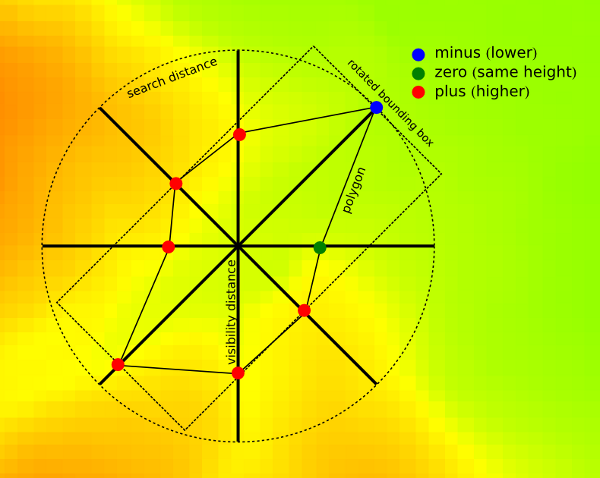
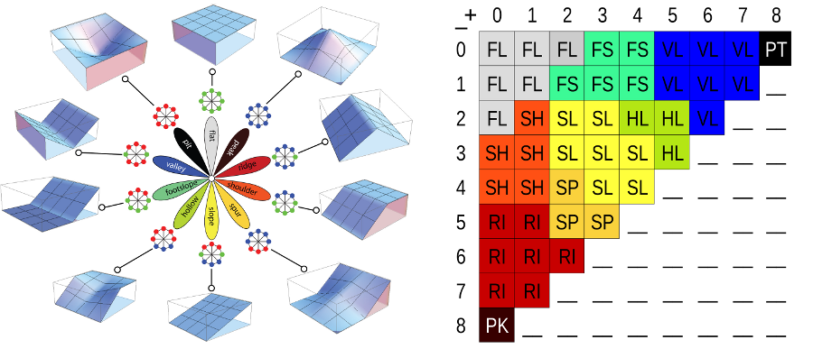

DESCRIPTION
r.geomorphon calculates terrain forms using machine-vison
technique called geomorphons.
What is geomorphon:

Geomorphon is a new concept of presentation and analysis of terrain
forms. This concept utilises 8-tuple pattern of the visibility
neighbourhood and breaks well known limitation of standard calculus
approach where all terrain forms cannot be detected in a single window
size. The pattern arises from a comparison of a focus pixel with its eight
neighbors starting from the one located to the east and continuing
counterclockwise producing ternary operator. For example, a tuple
{+,-,-,-,0,+,+,+} describes one possible pattern of relative measures
{higher, lower, lower, lower, equal, higher, higher, higher} for pixels
surrounding the focus pixel. It is important to stress that the visibility
neighbors are not necessarily an immediate neighbors of the focus
pixel in the grid, but the pixels determined from the line-of-sight
principle along the eight principal directions. This principle relates
surface relief and horizontal distance by means of so-called zenith and
nadir angles along the eight principal compass directions. The ternary
operator converts the information contained in all the pairs of zenith and
nadir angles into the ternary pattern (8-tuple). The result depends on the
values of two parameters: search radius (L) and relief threshold (d). The
search radius is the maximum allowable distance for calculation of zenith
and nadir angles. The relief threshold is a minimum value of difference
between LOSs angle (zenith and nadir) that is considered significantly
different from the horizon. Two lines-of-sight are necessary due to zenith
LOS only, does not detect positive forms correctly.
There are 3**8 = 6561 possible ternary patterns (8-tuples). By removing
all patterns that are the result of either rotation or reflection of other
patterns, a set of 498 patterns remains, referred to as geomorphons.
This is a comprehensive and exhaustive set of idealized landforms that are
independent of the size, relief, and orientation of the actual landform.
Form recognition depends on two free parameters: Search radius
and flatness threshold. Using larger values of L and is tantamount
to terrain classification from a higher and wider perspective, whereas
using smaller values of L and is tantamount to terrain classification from
a local point of view. A character of the map depends on the value of L.
Using small value of L results in the map that correctly identifies
landforms if their size is smaller than L; landforms having larger sizes
are broken down into components. Using larger values of L allows
simultaneous identification of landforms on variety of sizes in expense of
recognition smaller, second-order forms. There are two additional
parameters: skip radius used to eliminate impact of small
irregularities. On the contrary flatness distance eliminates the
impact of very high distance (in meters) of search radius which may not
detect elevation difference if this is at very far distance. Important
especially with low resolution DEMS.
OPTIONS
- -m
- All distance parameters (search, skip, flat distances) are supplied as meters instead of cells (default). To avoid situation when supplied distances is smaller than one cell program first check if supplied distance is longer than one cell in both NS and WE directions. For LatLong projection only NS distance checked, because in latitude angular unit comprise always bigger or equal distance than longitude one. If distance is supplied in cells, For all projections is recalculated into meters according formula:
number_of_cells*resolution_along_NS_direction. It is important if geomorphons are calculated for large areas in LatLong projection.
- elevation
- Digital elevation model. Data can be of any type and any projection. During calculation DEM is stored as floating point raster.
- search
- Determines length on the geodesic distances in all eight directions where line-of-sight is calculated. To speed up calculation is determines only these cells which centers falls into the distance.
- skip
- Determines length on the geodesic distances at the beginning of calculation all eight directions where line-of-sight is yet calculated. To speed up calculation this distance is always recalculated into number of cell which are skipped at the beginning of every line-of-sight and is equal in all direction. This parameter eliminates forms of very small extend, smaller than skip parameter.
- flat
- The difference (in degrees) between zenith and nadir line-of-sight which indicate flat direction. If higher threshold produce more flat maps. If resolution of the map is low (more than 1 km per cell) threshold should be very small (much smaller than 1 degree) because on such distance 1 degree of difference means several meters of high difference.
- dist
- Flat distance. This is additional parameter defining the distance above which the threshold starts to decrease to avoid problems with pseudo-flat line-of-sights if real elevation difference appears on the distance where its value is higher (TO BE CORRECTED).
- comparison
- Comparison mode for zenith/nadir line-of-sight search. "anglev1" is
the original r.geomorphon comparison mode. "anglev2" is an improved
mode, which better handles angle thresholds and zenith/nadir angles
that are exactly equal. "anglev2_distance" in addition to that takes
the zenith/nadir distances into account when the angles are exactly
equal.
- forms
- Returns geomorphic map with 10 most popular terrestrial forms. Legend for forms, its definition by the number of + and - and its idealized visualisation are presented at the image.
Forms represented by geomorphons:

- ternary
- returns code of one of 498 unique ternary patterns for every cell. The code is a decimal representation of 8-tuple minimalised patterns written in ternary system. Full list of patterns is available in source code directory as patterns.txt. This map can be used to create alternative form classification using supervised approach.
- positive and negative
- returns codes binary patterns for zenith (positive) and nadir (negative) line of sights. The code is a decimal representation of 8-tuple minimalised patterns written in binary system. Full list of patterns is available in source code directory as patterns.txt.
- coordinates
- The central point of a single geomorphon to profile. The central
point must be within the computational region, which should be large
enough to accommodate the search radius. Setting the region larger than
that will not produce more accurate data, but in the current
implementation will slow the computation down. For the best results
remember to align the region to the raster cells. Profiling is mutually
exclusive with any raster outputs, but other parameters and flags (such
as elevation, search, comparison, -m and
-e) work as usual.
- profiledata
- The output file name for the complete profile data, "-" means to
write to the standard output. The data is in a machine-readable format
and it includes assorted values describing the computation context and
parameters, as well as its intermediate and final results.
- profileformat
- Format of the profile data: "json", "yaml" or "xml".
NOTE: parameters below are experimental. The usefulness of these parameters are currently under investigation.
- intensity
- returns average difference between central cell of geomorphon and eight cells in visibility neighbourhood. This parameter shows local (as is visible) exposition/abasement of the form in the terrain.
- range
- returns difference between minimum and maximum values of visibility neighbourhood.
- variance
- returns variance (difference between particular values and mean value) of visibility neighbourhood.
- extend
- returns area of the polygon created by the 8 points where line-of-sight cuts the terrain (see image in description section).
- azimuth
- returns orientation of the polygon constituting geomorphon. This orientation is currently calculated as a orientation of least square fit line to the eight verticles of this polygon.
- elongation
- returns proportion between sides of the bounding box rectangle calculated for geomorphon rotated to fit least square line.
- width
- returns length of the shorter side of the bounding box rectangle calculated for geomorphon rotated to fit least square line.
NOTES
From computational point of view there are no limitations of input DEM and
free parameters used in calculation. However, in practice there are some
issues on DEM resolution and search radius. Low resolution DEM especially
above 1 km per cell requires smaller than default flatness threshold. On
the other hand, only forms with high local elevation difference will be
detected correctly. It results from fact that on very high distance (of
order of kilometers or higher) even relatively high elevation difference
will be recognized as flat. For example at the distance of 8 km (8 cells
with 1 km resolution DEM) an relative elevation difference of at least 136
m is required to be noticed as non-flat. Flatness distance threshold may
be helpful to avoid this problem.
EXAMPLES
Geomorphon calculation: extraction of terrestrial landforms
Geomorphon calculation example using the EU DEM 25m:
g.region raster=eu_dem_25m -p
r.geomorphon elevation=eu_dem_25m forms=eu_dem_25m_geomorph
# verify terrestrial landforms found in DEM
r.category eu_dem_25m_geomorph
1 flat
2 peak
3 ridge
4 shoulder
5 spur
6 slope
7 hollow
8 footslope
9 valley
10 pit
Extraction of peaks
Using the resulting terrestrial landforms map, single landforms can
be extracted, e.g. the peaks, and converted into a vector point map:
r.mapcalc expression="eu_dem_25m_peaks = if(eu_dem_25m_geomorph == 2, 1, null())"
r.thin input=eu_dem_25m_peaks output=eu_dem_25m_peaks_thinned
r.to.vect input=eu_dem_25m_peaks_thinned output=eu_dem_25m_peaks type=point
v.info input=eu_dem_25m_peaks
REFERENCES
- Stepinski, T., Jasiewicz, J., 2011, Geomorphons - a new approach to
classification of landform, in : Eds: Hengl, T., Evans, I.S., Wilson,
J.P., and Gould, M., Proceedings of Geomorphometry 2011, Redlands,
109-112 (PDF)
- Jasiewicz, J., Stepinski, T., 2013, Geomorphons - a pattern
recognition approach to classification and mapping of landforms,
Geomorphology, vol. 182, 147-156 (DOI: 10.1016/j.geomorph.2012.11.005)
SEE ALSO
r.param.scale
AUTHORS
Jarek Jasiewicz, Tomek Stepinski (merit contribution)